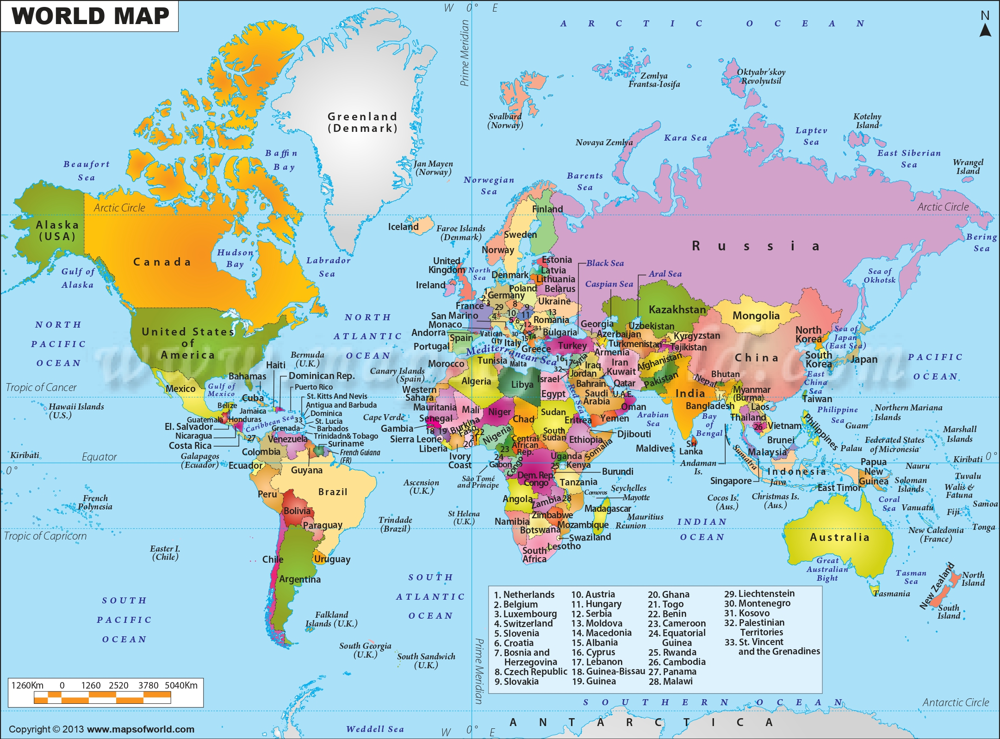

Select a Country
India
India faces some of the highest levels of air pollution globally, with major cities like Delhi, Kanpur, and Varanasi frequently recording hazardous Air Quality Index (AQI) levels. The primary causes include vehicle emissions, industrial discharge, construction dust, and the burning of crop residue in northern states. During winter, atmospheric conditions trap pollutants near the ground, worsening smog. This persistent pollution not only harms public health—causing respiratory and cardiovascular diseases—but also affects agriculture and visibility, making it a critical environmental and public health issue.
Average AQI: 180
Major Cities Affected: Delhi, Kanpur, Varanasi
China
China experiences severe air pollution, especially in industrial and densely populated regions like Beijing, Shanghai, and Tianjin. Major contributors include coal combustion, factory emissions, and vehicular exhaust. Seasonal factors like winter heating and stagnant air worsen smog levels. High particulate matter (PM2.5) concentrations pose serious risks to public health, contributing to respiratory and heart diseases. Despite efforts to reduce emissions and promote cleaner energy, air pollution remains a pressing environmental and health challenge for the country.
Average AQI: 200
Major Cities Affected:
Beijing, Tianjin, Shijiazhuang
USA
The United States faces moderate to high air pollution levels in urban and industrial areas such as Los Angeles, Houston, and Pittsburgh. The primary sources include vehicle emissions, power plants, and industrial activities. Wildfires in the western states have also become a significant seasonal contributor. Although regulations like the Clean Air Act have improved air quality over the decades, pollution still poses health risks, especially due to fine particulate matter (PM2.5) and ground-level ozone. Vulnerable populations, including children and the elderly, remain at higher risk for respiratory and cardiovascular issues.
Average AQI: 90
Major Cities Affected:
Los Angeles, Bakersfield, Phoenix
South Korea
South Korea experiences significant air pollution, especially in cities like Seoul, Incheon, and Daegu. The main contributors are vehicle emissions, industrial activities, and transboundary pollution—particularly fine dust (PM2.5) carried by winds from neighboring countries. Seasonal factors, like yellow dust storms from the Gobi Desert, worsen air quality during spring. Despite government efforts such as stricter emission standards and public awareness campaigns, pollution levels still pose serious health risks, including respiratory illnesses, fatigue, and eye irritation. The issue remains a major public concern affecting both urban life and environmental sustainability.
Average AQI: 105
Major Cities Affected:
Seoul, Incheon, Daegu
Switzerland
Switzerland generally enjoys good air quality compared to many countries, thanks to strong environmental regulations and public awareness. However, urban centers like Zurich, Geneva, and Basel still face periodic air pollution challenges. The main sources include road traffic, residential heating, and agricultural emissions. In winter, temperature inversions can trap pollutants near the ground, briefly raising particulate matter (PM10) levels. While not severe, these episodes can still affect sensitive groups, such as children, the elderly, and those with respiratory conditions. Continued efforts in clean energy and sustainable transport help maintain Switzerland’s high environmental standards.
Average AQI: 40
Major Cities:
Zurich, Geneva
Japan

Japan has made significant progress in reducing air pollution since the industrial boom of the 20th century. Today, air quality is generally moderate to good, especially in rural areas. However, major cities like Tokyo, Osaka, and Nagoya still experience pollution from vehicle emissions, industrial activities, and energy production. Seasonal factors, such as yellow dust storms from China and Korea, can temporarily worsen air quality. Japan also faces ozone pollution during warmer months. Despite these challenges, strict environmental policies, technological advancements, and public transportation systems contribute to maintaining cleaner air across the country.
Average AQI: 60
Major Cities Affected:
Tokyo, Osaka, Fukuoka
Malaysia

Malaysia experiences moderate to high levels of air pollution, especially in urban areas like Kuala Lumpur, Johor Bahru, and Penang. Key contributors include vehicle emissions, industrial activity, and open burning. A major recurring issue is transboundary haze, often caused by forest fires and slash-and-burn practices in neighboring countries like Indonesia. This haze significantly degrades air quality during certain months, affecting health and visibility. While Malaysia has implemented air quality monitoring and regulations, tackling regional cooperation and illegal burning remains a challenge in fully addressing the issue.
Average AQI: 120
Major Cities Affected:
Kuala Lumpur, Johor Bahru, Shah Alam
Iran
Iran struggles with significant air pollution, particularly in major cities like Tehran, Mashhad, and Isfahan. The main sources include heavy traffic congestion, outdated vehicles, industrial emissions, and limited green energy alternatives. Geographic and climatic conditions often trap pollutants, especially in Tehran, leading to prolonged smog episodes. Air pollution in Iran contributes to serious health concerns such as respiratory and cardiovascular diseases, and poses risks to children and the elderly. Despite efforts to improve public transport and enforce environmental regulations, consistent enforcement and modernization remain ongoing challenges.
Average AQI: 160
Major Cities Affected:
Tehran, Ahvaz, Mashhad
Iraq
Iraq faces growing air pollution concerns, especially in cities like Baghdad, Basra, and Mosul. Key contributors include vehicle emissions, industrial activities, burning of waste, and frequent dust storms due to desertification. Prolonged conflict and weak environmental regulations have worsened pollution levels, leading to increased respiratory problems and reduced air quality. Limited infrastructure for monitoring and mitigating pollution further complicates efforts to protect public health and the environment in Iraq.
Average AQI: 155
Major Cities Affected:
Baghdad, Basra, Mosul
Canada

Canada generally enjoys good air quality, but pollution still affects regions with high industrial activity or traffic, such as Toronto, Montreal, and Alberta’s oil sands. Major sources include vehicle emissions, industrial processes, and wildfires—especially in western provinces. Seasonal wildfires significantly elevate particulate matter (PM2.5) levels, impacting both rural and urban air quality. Though Canada enforces strict environmental regulations, air pollution remains a concern for vulnerable populations, especially during wildfire seasons and in densely populated areas.
Average AQI: 40
Major Cities Affected:
Toronto,Vancouver, Calgary
UK
The United Kingdom has made significant progress in reducing air pollution over the decades, but challenges remain—especially in urban areas like London, Birmingham, and Manchester. Key contributors include vehicle emissions, particularly from diesel engines, industrial activity, and residential wood burning. While regulations and clean air zones have helped lower pollutant levels, nitrogen dioxide (NO₂) and particulate matter (PM2.5) still pose health risks, especially for children, the elderly, and those with preexisting conditions. Seasonal weather can also trap pollutants, worsening air quality temporarily.
Average AQI: 55
Major Cities Affected:
London, Birmingham, Manchester
Indonesia

Indonesia struggles with recurring air pollution, particularly in cities like Jakarta and due to widespread forest and peatland fires. Major contributors include vehicle emissions, industrial pollution, and biomass burning—especially slash-and-burn agriculture practices in Sumatra and Kalimantan. These fires often cause regional haze, affecting neighboring countries as well. In urban areas, traffic congestion and poor fuel quality worsen air quality. The health impacts are significant, leading to respiratory issues, reduced visibility, and disruptions in daily life. Government efforts are ongoing but enforcement and sustainable alternatives remain key challenges.
Average AQI: 140
Major Cities Affected:
Jakarta, Pekanbaru, Palembang
Singapore
Singapore generally maintains moderate air quality due to strict environmental regulations and urban planning. However, it faces seasonal spikes in pollution from transboundary haze, primarily caused by forest fires in Indonesia. These haze events can push the PSI (Pollutant Standards Index) to unhealthy levels. Local sources such as vehicle emissions and industrial activities also contribute to pollution, especially in densely populated areas. The government monitors air quality closely and issues public health advisories during haze periods, while promoting green initiatives to ensure long-term sustainability and cleaner air.
Average AQI: 105
Major Cities Affected:
Singapore (City-State)
Germany

Germany, despite its strong environmental policies and advancements in green technology, still faces challenges with air pollution, particularly in urban and industrial regions. Major sources include vehicle emissions, especially from diesel engines, industrial activity, and residential heating. Cities like Stuttgart and Berlin occasionally record high levels of nitrogen dioxide (NO₂) and particulate matter (PM10), especially during winter months. While overall air quality has improved over the years, persistent pollution remains a concern for public health, prompting Germany to further invest in clean transportation, renewable energy, and stricter emission standards.
Average AQI: 50
Major Cities Affected:
Berlin, Munich, Frankfurt
Mexico
Mexico faces significant air pollution challenges, especially in urban centers like Mexico City, which often experiences elevated levels of ozone and particulate matter. Key contributors include vehicle emissions, industrial processes, and open burning of waste. Geographical factors—such as the city's high altitude and surrounding mountains—can trap pollutants, worsening smog conditions. Despite improvements through public transit initiatives and cleaner fuel standards, air pollution continues to affect respiratory health and visibility, making it a critical environmental issue for the country.
Average AQI: 115
Major Cities Affected:
Mexico City, Toluca, Monterrey
France
France, particularly cities like Paris and Lyon, faces moderate to high air pollution, primarily due to road traffic, industrial emissions, and residential heating. In colder months, the use of wood-burning stoves and poor atmospheric dispersion can cause smog episodes. Though France has implemented strict emission regulations and promotes clean mobility, fine particulate matter (PM2.5) and nitrogen dioxide (NO₂) still pose health risks. Chronic exposure contributes to respiratory and cardiovascular problems, making air quality a persistent public health concern.
Average AQI: 55
Major Cities Affected:
Paris, Lyon, Marseille
Russia

Russia experiences significant air pollution, especially in industrial cities like Moscow, Norilsk, and Chelyabinsk. The main sources include heavy industrial activities, power plants, vehicular emissions, and coal combustion. Norilsk, in particular, is one of the world’s most polluted cities due to extensive nickel smelting. Cold weather often traps pollutants close to the ground, worsening the situation. Although Russia has made some progress in monitoring air quality, enforcement of environmental regulations remains inconsistent. Prolonged exposure to polluted air has led to increased respiratory and cardiovascular health issues, making it a growing public health and environmental challenge.
Average AQI: 180
Major Cities Affected:
Moscow, Saint Petersburg, Novosibirsk